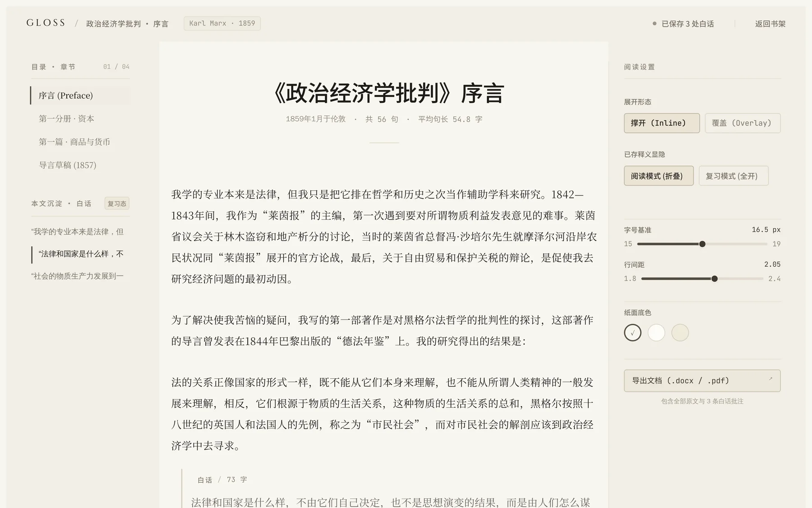
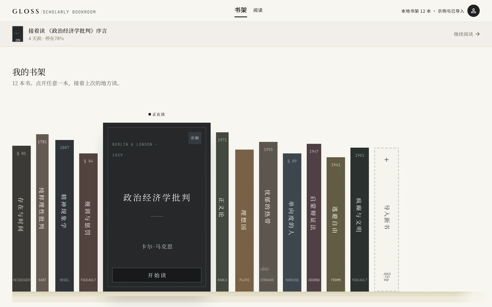

01
点一句读不懂的话，就地把它讲成白话
读难书，最难的不是查不到，是每查一次都要离开这一页。Gloss 把「选中 → 切出去 → 搜索 → 对照 → 切回来」压成一次点击：点句子，就地撑开一句白话，不打断阅读。
236条真实批注
5次 PRD 迭代
20句分层评测集
两个项目的代码都由 AI 编程助手实现，我负责定义问题、拆解任务、设计规则、约束 agent、验收结果。
读难书，最难的不是查不到，是每查一次都要离开这一页。Gloss 把「选中 → 切出去 → 搜索 → 对照 → 切回来」压成一次点击：点句子，就地撑开一句白话，不打断阅读。
阅读页把目录、正文、阅读参数分进三栏，左栏是书的结构，右栏是读书的参数，中间才是书本身；书架页 12 本书脊竖排，末位留一个虚线位的「导入新书」。
读不懂 → 读通 → 读懂 → 读深这一整条链路放在原文旁边完成。


备考时能记住，却无法验证自己是不是真的理解、内化了——问题出在「只有输入、没有反馈」。费曼把方向反过来：用户复述，AI 只负责追问，思考空间留给你自己。
读完整案例 →它先抛给你一个焦点问题，答不上来时给的不是答案，是本题三次提示额度。方向不对就打开主题设定，把「偏原理还是偏应用」「学透还是随便逛」重新定一遍；掌握程度最后落成一张色块地图，看清自己的牢固点与薄弱点。


中文哲学书点句出白话的阅读工具，已有 MVP 版本。我负责问题定义、PRD 迭代、改写规则设计、评测集构建与验收。
AI 费曼式学习工具，已有 MVP 版本。负责产品定位、语气规范设计与开发验收。
主导海外家庭工具 App 的 AI 家庭管家项目与本地日历同步项目。从需求分析、竞品研究、PRD 到开发跟进与上线验收。
负责留学项目的小红书内容种草与线索获取，围绕目标用户决策链路设计内容策略，累计产出 100+ 篇内容，参与内容到咨询线索的转化链路复盘。
独立负责日常运营、内容编辑与排版发布，累计发布 97 篇；沉淀标准化推文模板与发布 SOP，出稿时长从 50 分钟降到 20 分钟。
| AI 工具 | Claude Code、Codex；Prompt 设计与 AI 工作流搭建 |
| 设计工具 | Figma、Google Stitch |
| 数据工具 | Excel（VLOOKUP、数据透视表）、SQL |
| 语言能力 | CET-6 ｜ 粤语 |